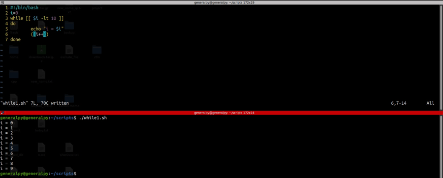
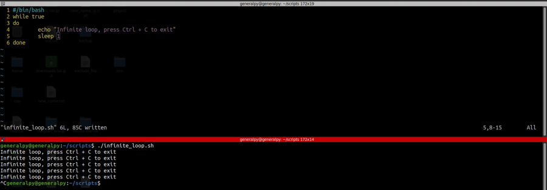
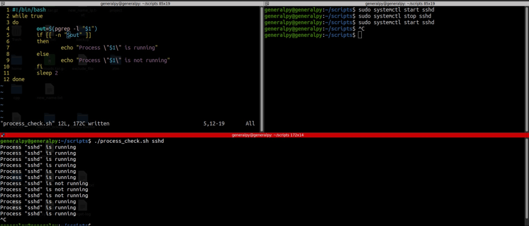

While loop is another looping condition which unlike for loop, loops till a condition becomes false.
Syntax is :
while condition
do
#commands
done
Let's look at some examples.

Here we used a variable i to check for a condition if i is less than 10. The loop will run 10 times as it is starting from 0.
To perform arithmetic calculations, we have to use 2 parentheses (()). Bash only supports limited amount of arithmetic calculations.
In above example we incremented i so that loop doesn't become infinite loop. An infinite loop is a loop which runs infinitely without terminating. Some ways to write infinite loops are :
while [ 1 -eq 1]
do
done
while true
do
done
while :
do
done
In above code , we wrote infinite loop in 3 ways. In first way 1 = 1 is always true so we use that condition to execute loop infinitely. In second example we used keyword true and in 3rd example we used : which always evaluates to true.
Let's create a script with infinite loop.

Let's create a script that checks every 2 seconds if a service is running.

Break and continue statements are also available in bash.